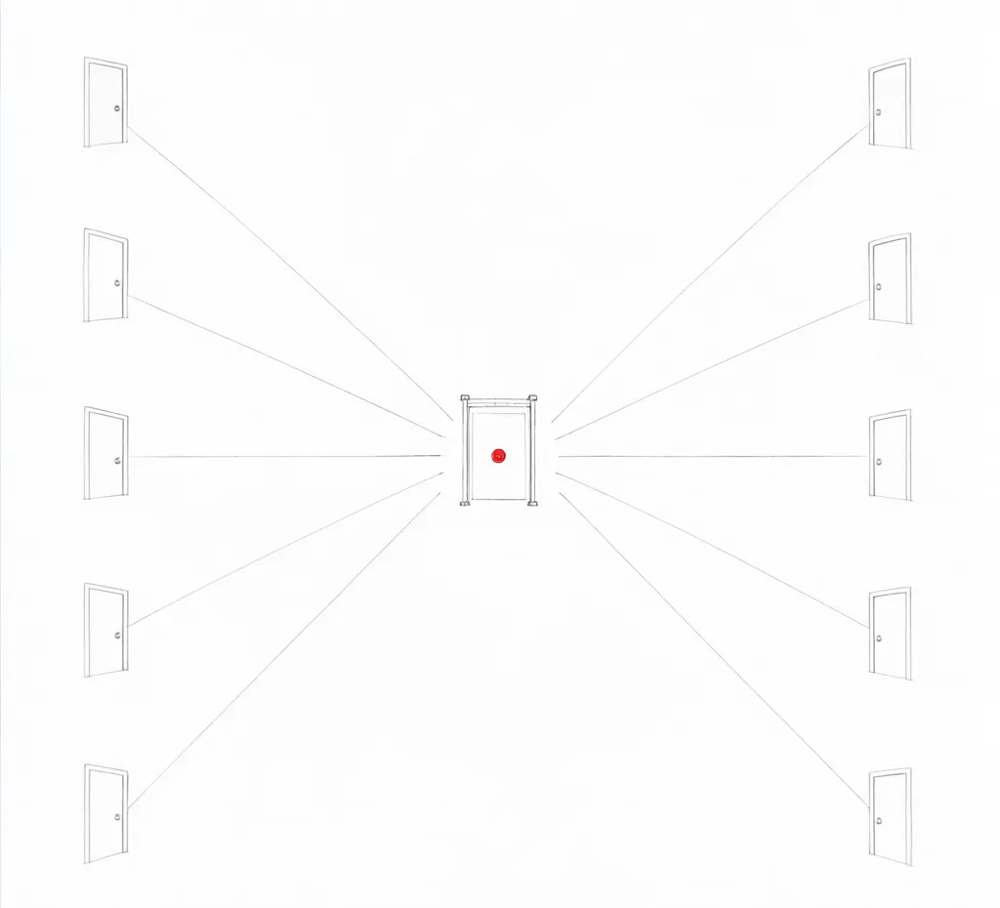

Locals publish their own tours.
Yurii connects travellers who want local culture with the people who actually live there. Guides write and publish their own tours, so the offer carries the guide’s own framing instead of a summarised version written by a booking desk.
Delivered ahead of the agreed schedule, which left time to smooth the guide-side editing flow before the first season.
- Role
- Lead Developer
- Dates
- Nov 2015 – Apr 2016
- Teams
- Guide publishing, traveller search, booking
- Result
- Ahead of schedule
The problem
Two audiences with opposite habits: guides edit a handful of tours and care about photos and text; travellers browse hundreds and care about speed and date availability. A single overloaded screen serves neither.
Two densities, one data model.
ApproachGuide side: few, careful edits
A wide editing screen with live preview, autosave and an explicit publish step. Guides see what a traveller will see before committing.
Traveller side: many, fast scans
Compact cards, date-first filters, and results that load without waiting on images. Photos arrive after the text is readable.
One tour record
Both screens read the same structure, so a guide’s edit reaches search immediately and there is no second copy of the truth to reconcile.
Outcome

“The site went live before we expected it and the guides could manage their own listings from day one.”